Weeks 10-12: Machine Building
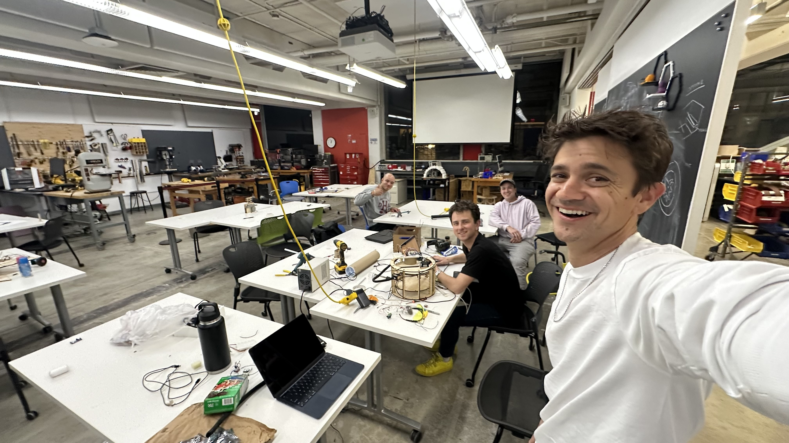
Assignment: Build a Drawing Robot
For this daunting assignment, our group got started with a suggestion from Wyatt who wanted to capitalize on the fact that his partner is a pastry chef - he suggested that we make a machine that can draw using cinnamon to decorate a cake or a coffee. Everyone was onboard with the idea - it seemed like a cool and unique take on the drawing machine assignment - but we didn't even know where to start. We began brainstorming some basics of the project - What gantry system are we going to use? How will we deposit the cinnamon? How is this device going to fit over top of a cake or coffee? In this process, we decided that we wanted to try out using polar coordinates instead of the typical, and available, cartesian coordinate gantries. We wanted to try this for a couple reasons. First, it would be pretty cool to just get something using an entirely different coordinate system working and functional - yes, it's still effectively the same process, but now instead of moving X and Y, we are moving R and Theta, which I think is pretty sick. Second, polar coordinates are conducive to round things, much like a cup of coffee or a (non-sheet) cake. These round objects are easier to draw over if we are drawing using circles. Third, which is kind of an added bonus, is that completing the assignment of drawing a circle with a fixed radius seemed much easier with polar coordinates than cartesian ones. With this in mind, we got to modelling our first iteration of what the project might look like, just so that we were all on the same page.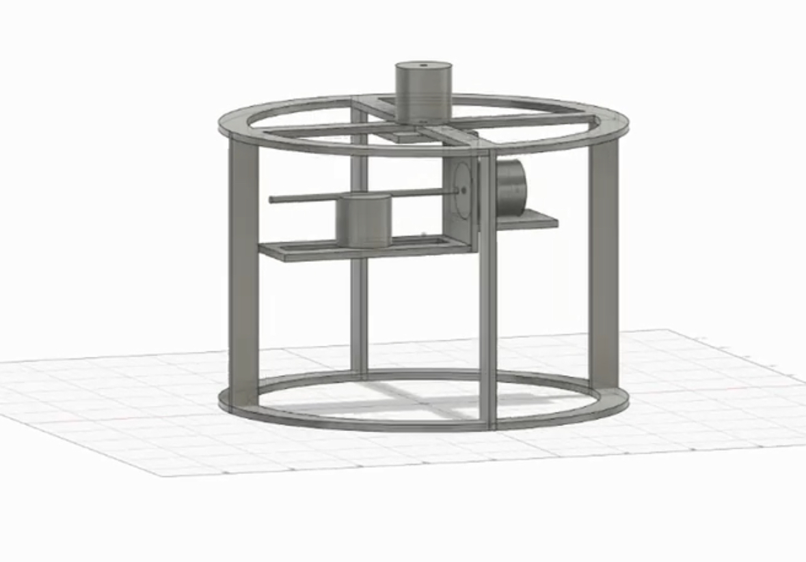
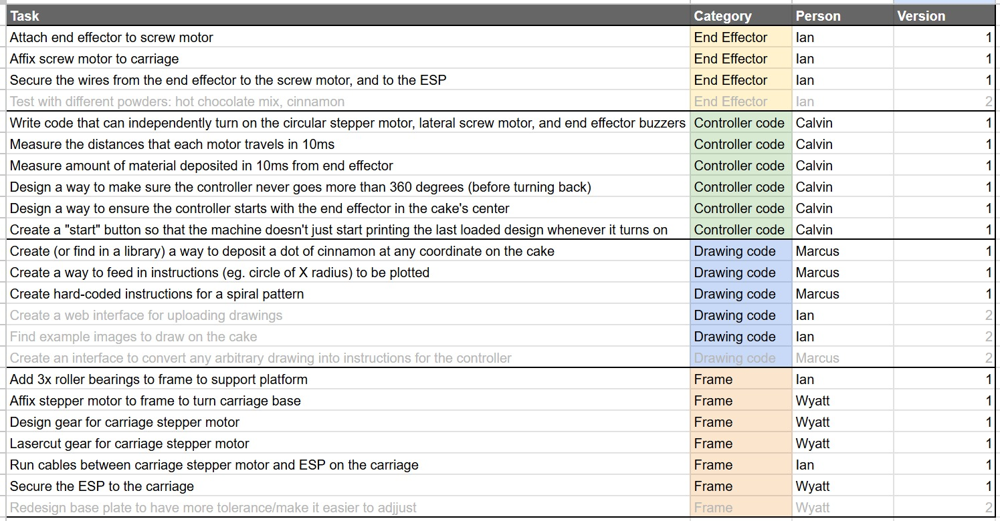
Gantry
This seemed like a crazy difficult task to tackle at first - it needs to be circular, sit on top of a cake or coffee, but still hold the end effector close enough to the medium to have a crisp line, it needs to be able to rotate the end effector, and so many more little considerations. With this in mind, we realized that there were no gantries like this that existed in the lab, so we began prototyping the backbone of our machine.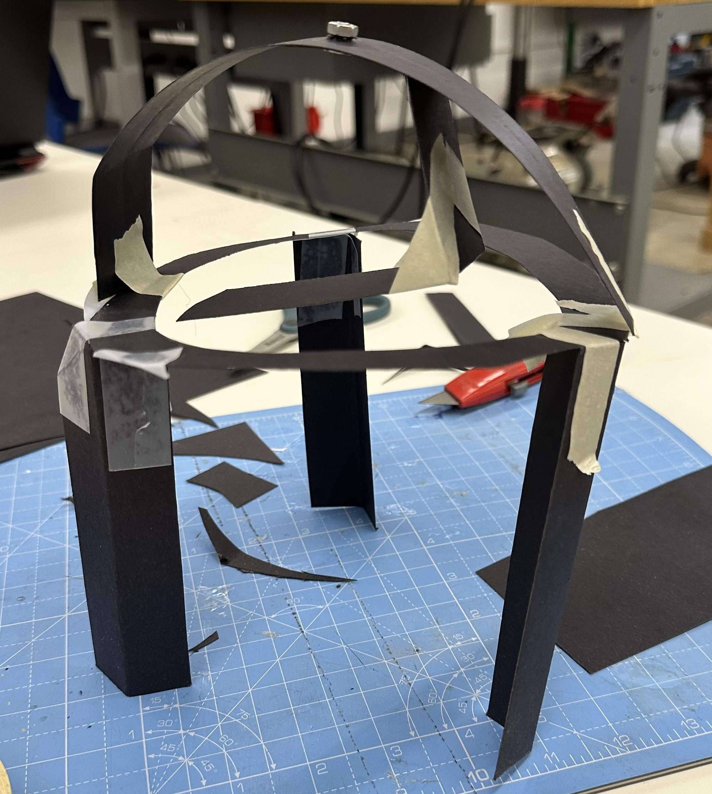
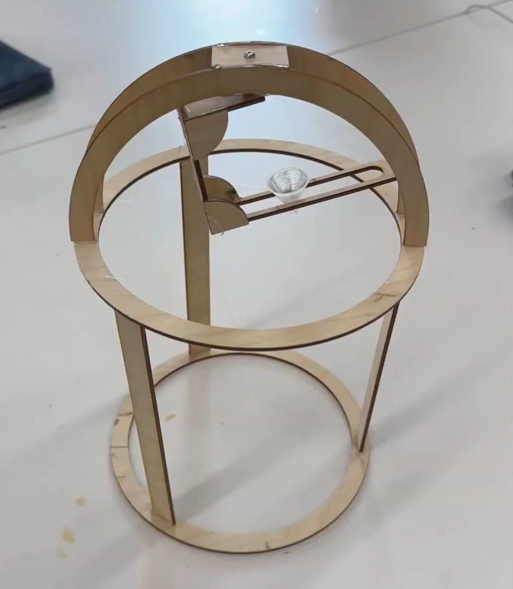
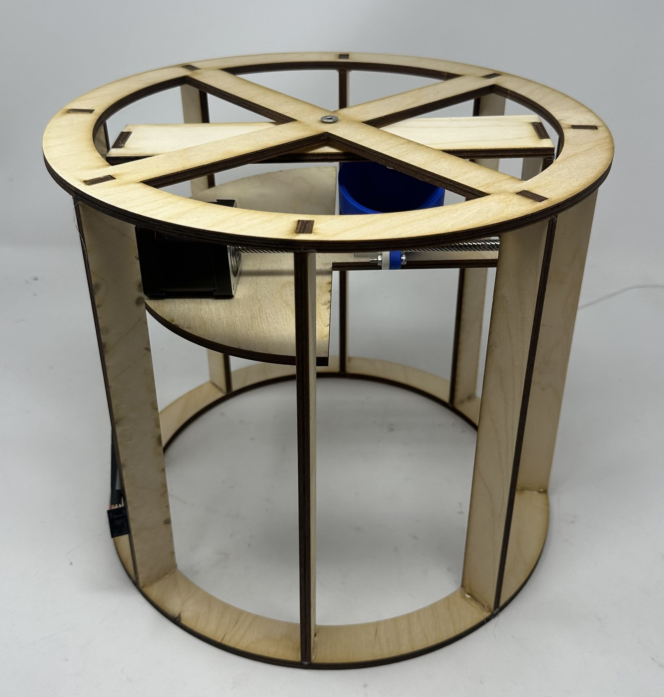
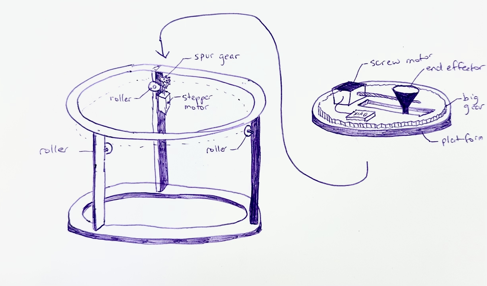

End Effector
The end effector needed to hold cinnamon, not deposit cinnamon when moving from position to position, and deposit cinnamon in the tightest line possible when we want it to. Our initial thought was a cone, and we didn't have cinnamon, so we prototyped using laminating paper rolled into a cone held together with tape that we could vary to change the hole size and corn starch in lieu of cinnamon. After some extremely messy testing, we found a hole size that when it was tapped, corn starch would be deposited and it wouldn't otherwise. To automate this tapping, we thought to use an eccentric motor, but that caused corn starch to fly everywhere, and then we found little vibrating motors that worked great. We could plug them directly into 3V3 and GND, hold it up to the cone, and it would vibrate out corn starch. After taking some measurements, we wanted to make a more official looking end effector prototype, so we designed a tiny little cone that could be printed in 8 minutes.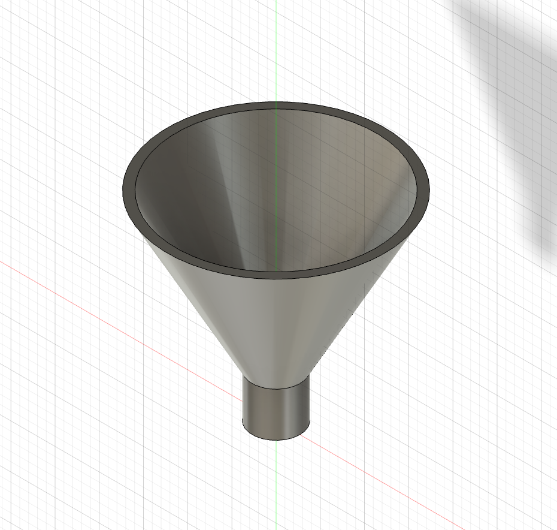
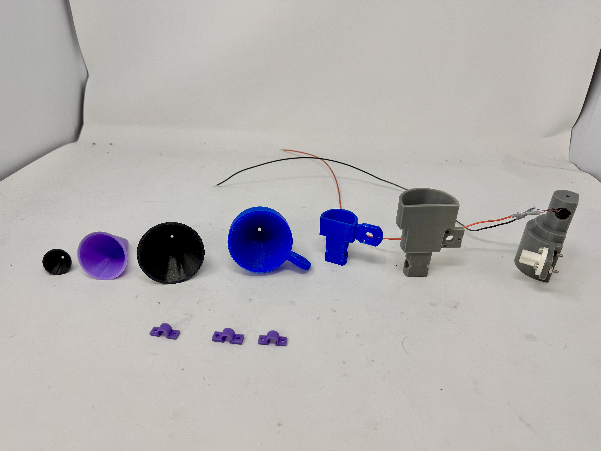
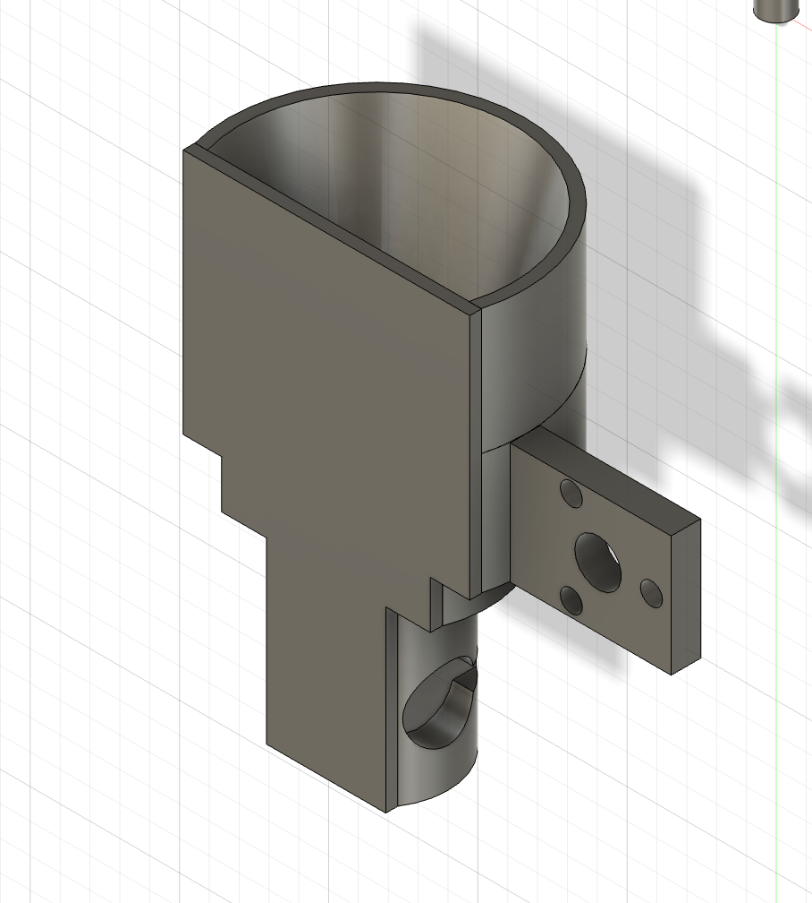
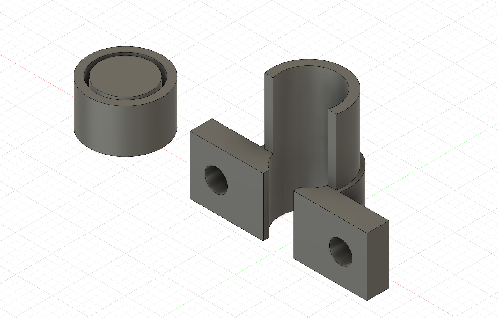
Code
We originally tried to make it so that we could upload any line drawing to a website, automatically convert it to polar coordinates, and then we could make the motor track those polar coordinates and replicate the uploaded image. We got the first half of this mostly working, and could convert line drawings to polar coordinates, but soon after trying to implement this code, we realized that it was going to be way too hard to get the motors to follow these coordinates. We got each of the motors running individually, but the motors were not cooperating with us and refused to work well in tandem to follow the coordinates that we laid out, since that would involve code running simultaneously instead of in sequence. With that in mind, we scrapped this idea and just focused on getting circles.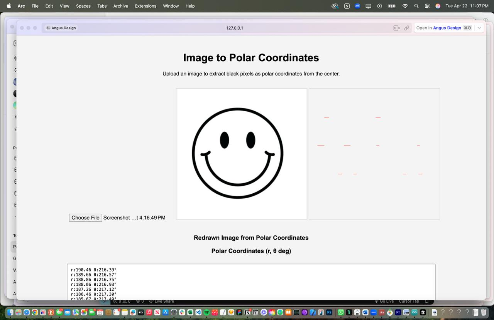
Motors
We went through so. many. different. motors. trying to get this to work, so I will spare the reader and get to the chase of what worked. We had a radial screw motor for linear movement along the R "axis" in our polar coordinate system. This was a stepper motor that used a lead screw and special attachment that mounted to our end effector which allowed for it to slide as the lead screw turned. The motor that controlled the theta "axis" was a little more complicated. We went through various stepper motors, but realized that the ones that we were using were not powerful enough, so we found one that runs on 12V and prayed we didn't fry too much of our circuitry. This stepper motor is mounted on the side of our gantry and turns a 21-tooth gear that meshes with the 119-tooth gear that makes up the top platform of the gantry. In this way, we could turn the stepper motor and have it control the rotation of the top platform which had everything on it. We also completely bricked at least one stepper motor and one vibrational motor, although the stepper motor may or may not have been our fault. Regardless, we got them attached and working.The Last Bender
For a stupid, ungodly amount of time on the night before the assignment was due, we locked ourselves in the PS70 lab until this project was done. If I tried to document everything that went wrong on this all-night bender, it would be a multi-page essay, so instead I will cut right to the chase on the highlights. We replaced the top platform with an acrylic version and the rotating gear with an acrylic gear to make the whole thing flatter and rotate more smoothly. We designed a little enclosure that hot glues to the top platform that holds the stepper motor in place, while still allowing us to pick up and place the motor down for debugging. The vibrating motor wasn't cooperating for a myriad of reasons and everything that we did seemed to make it worse, which we narrowed down to it being a power issue. To remedy this, we hooked up an entirely separate power circuit using a tiny ~3.7V LiPo battery that definitely wasn't harvested from a vape and connected it to our main circuit via a common ground and a transistor. The transistor gate is connected to a data pin on the arduino, so when the arduino sends a high digitalwrite, it connects the circuit of the 3.7V LiPo to the vibrating motor and allows us to control when it vibrates. This was originally giving us weird voltage spikes, but it was due to an issue with common ground. Now, we had an insane rat's nest of wires, and the most technical and effective solution we could devise was to use copious quantities of masking tape, hot glue, and cardboard. All it takes to run the motor in a circle is one hand holding up the cables instead of four hands praying to every deity that something doesn't come unplugged and start a fire! Through what can only be described as delirium, we squashed a seemingly never-ending stream of little issues that kept cropping up, and ever so slowly crept towards a more finalized version. Then, at approximately 4:36 AM, a miracle struck. Our stupid little end effector slowly inched towards the limit switch, hit it and indicated its home position, inched forward, deposited the single most promising dot of cinnamon known to mankind, then began to make some of the most beautiful circles any of us have ever seen. After some tweaking of the motor speeds, center position, and when to turn on/off the vibrating motor, we had the single most overengineered circle drawer ever. And it was amazing. We needed to reprint the end effector with a higher infill and more robust design because it got destroyed one of the times the motors went haywire, and we needed to sift the cinnamon before our demo to ensure that there was no clumping, but other than that, we are ready to wow everyone with a delicious cake and some awesome cinnamon circles.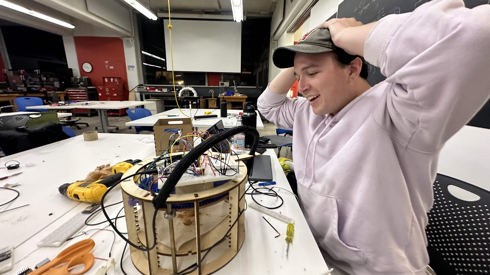